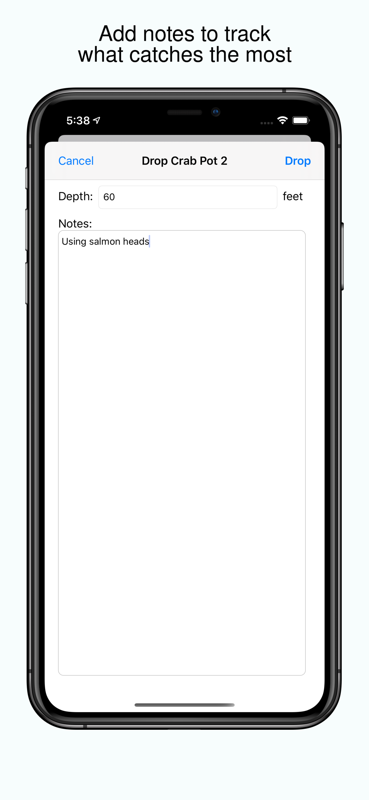
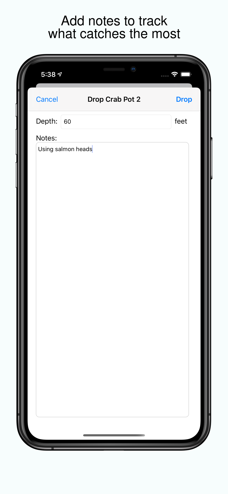

Crab and Shrimp Pot Tracker allows you to easily keep track of where your pots are, how long they've been down, and how many shrimp and crab you've caught.
Easily keep track of pot depths, location, and catch totals
Navigate back to your pots using the compass and pointer arrows
A map view lets you visually see where all your pots are with a variety of modes including a heatmap
Leave individual notes to keep track of what methods catch the most
A variety of stats on pot performance and soak time
Import and export pull history as a CSV file
Support for dark mode and iCloud syncing
Support
For Crab and Shrimp Pot Tracker support, please email support here.
 
